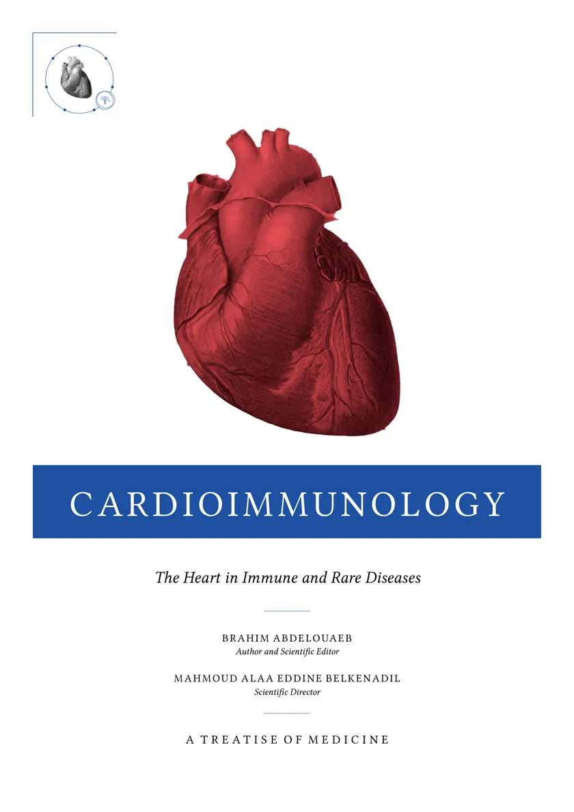

The Treatise
Cardioimmunology
The Heart in Immune and Rare Diseases. A Treatise of Medicine
- English edition, 2026
- Open access
Record and format
New edition, November 7, 2026 · 1,166 pages · PDF 46 MB
DOI 10.5281/zenodo.24044258 · latest version always at 10.5281/zenodo.24044257 · CC BY-NC-ND 4.0
Presentation
We read the vessel and the heart as immune organs, and the endothelium as the boundary where immunity meets hemodynamics.
The boundary between cardiology and immunology is not a natural boundary. It is an artifact of medical history, and we are crossing it. We propose a medicine of immunological interfaces, with the heart at its center, because its vessel reaches every organ and its blood touches every cell.
The French original, Cardioimmunologie, is available at 10.5281/zenodo.23426683; this English edition follows its new edition of 2026, with the same facts, figures and references.
How to cite
Abdelouaeb B. Cardioimmunology: The Heart in Immune and Rare Diseases. Cardioimmunology Review; 2026. doi:10.5281/zenodo.24044258.